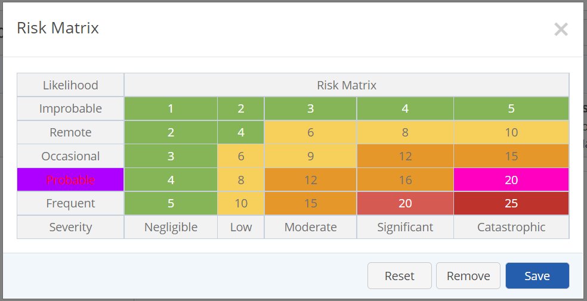
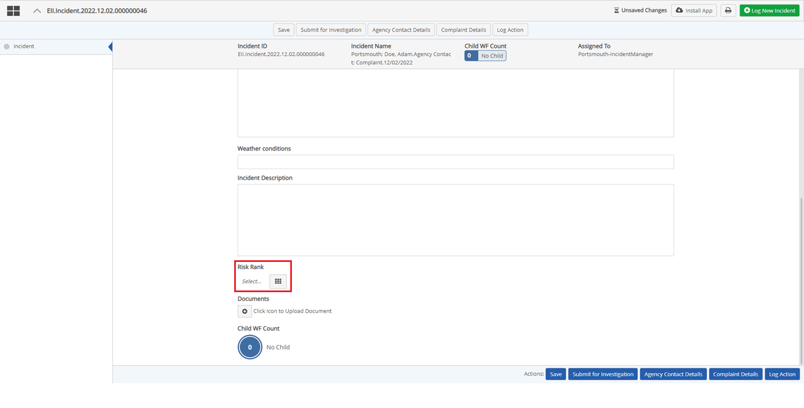
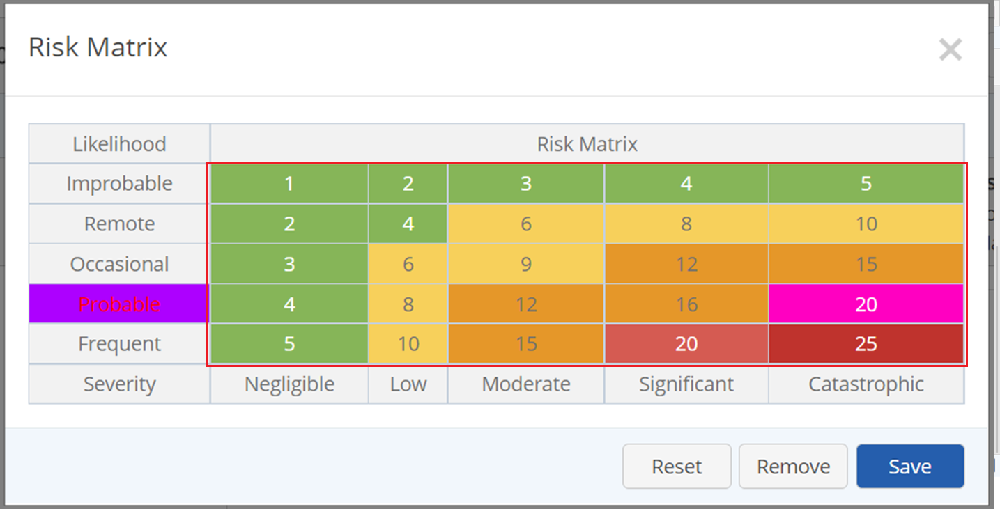
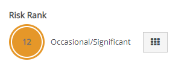
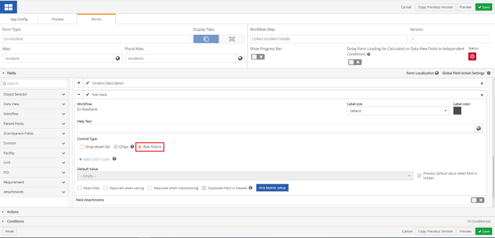
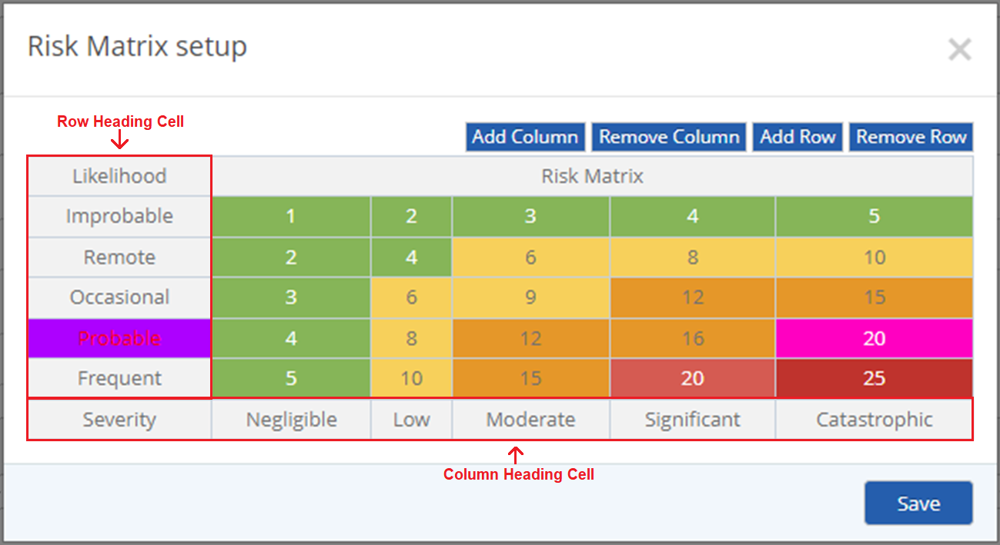
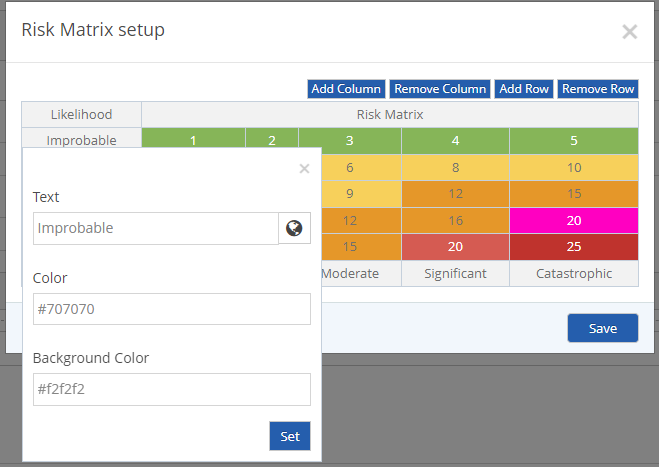
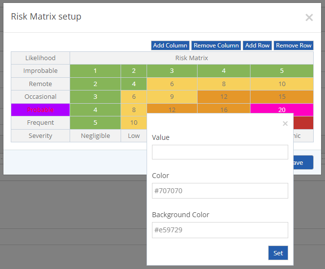

The Risk Matrix field is designed to allow a risk value to be assigned to any Advanced Workflows (WAB) app that contains a numeric dropdown list. The field may be used to prioritize severity of responses. The matrix is configurable according to your own requirements and purpose. The user selects a value to assign to the field by selecting a cell from the matrix in the pop-up dialog.

View and use a Risk Matrix in a Workflow
Navigate to a numeric dropdown list in a workflow step.

Under the Risk Matrix field click the Matrix icon. The Risk Matrix window will open.

Select a cell based on the Risk Matrix that you want to observe.
Click Save. The Risk Matrix Color and numeric value will display in the Risk Matrix icon, and to the right of the icon you will see the likelihood along with severity of the value selected.

Configure the Risk Matrix
To configure the Risk Matrix.
From the main menu dropdown, select a WAB.
From the WAB main menu dropdown, select Designer to open Forms Designer.
Click the Forms tab.
Click the Form Type dropdown textbox and select a workflow.
Select the Workflow Step where you would like to create a Risk Matrix.
In the Fields Section, scroll to a field that contains a numeric dropdown list in which you want to set up a Risk Matrix.

Under Control type, select Risk Matrix.
Once Risk Matrix is selected, click Risk Matrix Setup. The Risk Matrix Setup window will open.
To add a column, click Add Column. A column is added to the right of the Risk Matrix table.
To remove a column, click Remove Column. A column is removed from the right of the Risk Matrix table.
To add a row, click Add Row. A row is added to the bottom of the Risk Matrix Table.
To remove a row, click Remove Row. A row is removed from the bottom of the Risk Matrix table.

To edit a heading cell, click either a Row Heading Cell (on the left of the table), or a Column Heading Cell (on the bottom of the table). The Cell Setup window will open.

In the Cell Setup window, input a text value, select a text color, and select a background color for the cell.
Click Set.
For the cells within the table, click the cell. The cell setup window will open.
In the Cell Setup window, select a value from the Value dropdown textbox, select a text color, and select a background color for the cell.

Click Set.
Once the Risk Matrix Setup window is setup the way you want, click Save.